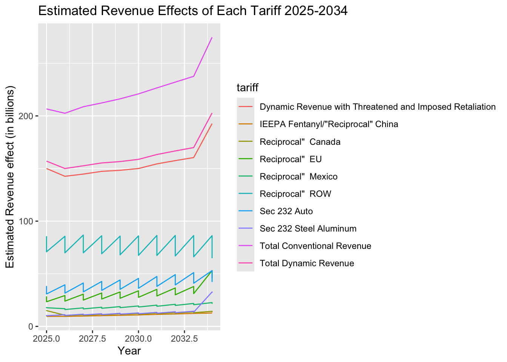
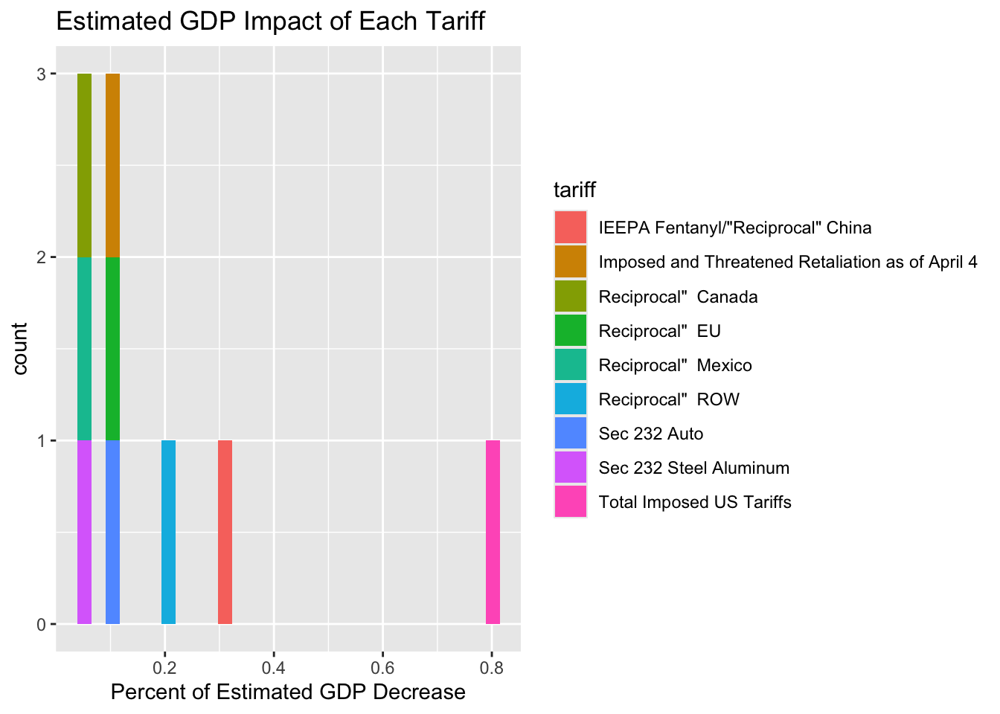
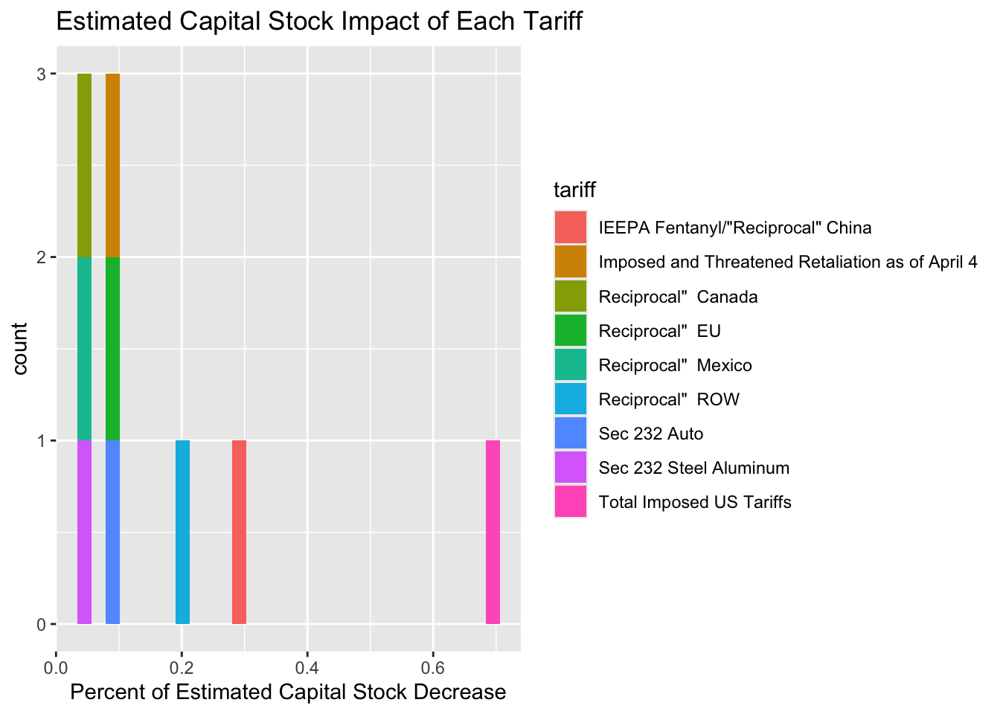
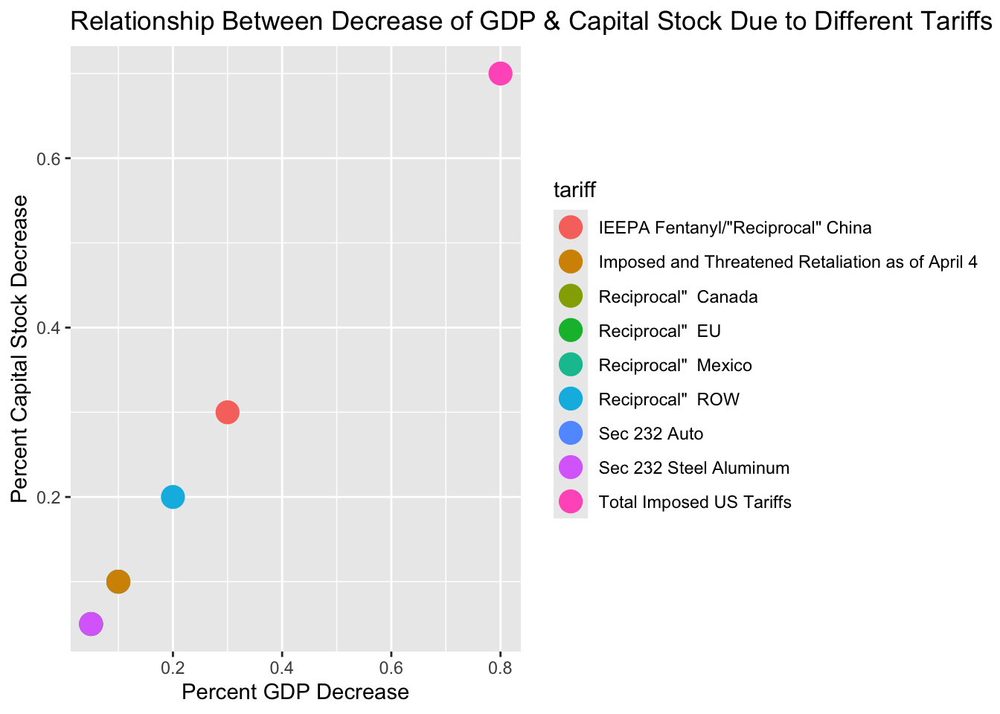

USA 2025 Tarrifs: An Exploration on the Econominc Effects of Trump’s Imposed Tarrifs on the Rest of the World
0.1 Research Question
We will be exploring some different tariffs president Trump has placed on the countries and items and trying to answer the large question: What will be the effect of Trump’s tariffs on the country?
0.2 Tariff Descriptions
To begin, we must first and foremost understand the seven tariffs we will be looking at. Some of these tariffs will have Reciprocal in their name meaning once these tariffs are placed, the country will likely place equal tariffs on the US.
- IEEPA Fentanyl/“Reciprocal” China: Tariffs imposed on China to attempt to decrease China’s influence on and in America as well as incentivize US manufacturing and consumption of US manufactured goods.
- Reciprocal Mexico: Tariffs imposed on China to attempt to decrease China’s influence on and in America as well as incentivize US manufacturing and consumption of US manufactured goods.
- Reciprocal Canada: Tariffs targeting Canadian goods in response to trade imbalances or retaliatory actions, often tied to broader trade disputes.
- Reciprocal EU: Tariffs placed on European Union goods to counter what the U.S. considers unfair trade practices or subsidies.
- Reciprocal ROW: Tariffs on countries outside specific blocs (like China, EU, NAFTA) as part of broader efforts to equalize trade relations.
- Sec 232 Steel Aluminum: Tariffs justified under Section 232 of the Trade Expansion Act, citing national security concerns related to steel and aluminum imports.
- Sec 232 Auto: Tariffs on automobile imports under Section 232, citing threats to U.S. auto industry and national security.
0.3 Variables Of Interest
There are three primary parts of the economy that we want to look at to figure out the effects of the tariffs. the three variables we will look at are Gross Domestic Product, Capital Stock, and Tax Revenue. Gross domestic product (GDP) refers to the total value of everything (Goods and services) a country produces in a year. Capital stock is the total number of shares that a company is authorized to issue to its shareholders. Finally, tax revenue is the income collected by governments through taxes.
Now knowing these variables of interest, we can return back to our research question (What will be the effect of Trump’s tariffs on the country?) and create a roadmap of how we will attempt to find an answer. We will try and figure out the affect of each of these tariffs on the variables individually, then we will look at the overall trends that we see when we compare the effect of each on the different variables.
0.4 Tariff Impact on Tax Revenue
The first question we will to answer is how do the different tariffs effect tax revenue?
Graph Structure:
- X-Axis: Year (2025-2034)
- Y-Axis: Estimated revenue effect (in billions)
- Fill-Color grouping: Each tariff
0.5 Main predictors:
- Total conventional revenue (purple) shows the simple sum of expected revenues assuming the economy works perfectly. We see this revenue rising over time due to general increase of imports, which in turn increases revenue.
- Total dynamic revenue (pink) shows the total revenue including retaliation effects (countries retaliating with tariffs of their own) and behavioral changes within the economy. This is a more realistic version of conventional revenue and more likely shows the effects the tariffs will have over this time period. When we look at this line compared to the conventional revenue line, not only is it substantially lower but it’s slope is also smaller as well. These two things tell us that the actual tax revenue that we expect to gain from these tariffs are lower because of country retaliation and it also won’t increase at a rapid rate.
- Dynamic revenue with threatened and Imposed retaliation (orange): Shows the total revenue due to only retaliation. When other countries retaliate, exports drop and tax is increased resulting in less predicted revenue and lower trade in general.
- Zig-zag patterns: We assume these zig-zag patterns that we see lower on the graph for the individual tariffs are likely due to seasonal or yearly cycles. Tax revenue resetting to 0 after every year and then continuing to increase as the year goes on. Economies also don’t grow in straight lines, there are always year to year day to day fluctuations.
- Steep rise near 2032: We predict this steep rise near 2032 could be due to a predicted new policies or the expiration of current tariffs. The expiration of current tariffs could cause the end of retaliation which would cause an upward surge of estimated revenue. It’s also possible that likely new policies will be put in place around this time that will have a large increasing effect on US tax revenue.
How will tariffs impact tax revenue?
We expect the tariffs to, overall, cause a steady increase of tax revenue over the coming years. In the very immediate future we do not expect to see any type of surge in any direction (barring any type of recession, war, natural disaster, or economy shifting technological advancement) until the early mid 2030s when either the tariffs will expire (possibly new ones replacing them) or new policies will be put in place effecting tax revenue.
0.6 Tariff Impact of GDP
Now that we have looked at how the tariffs will effect tax revenue, let us now explore how it will effect one of the biggest indicators of a country’s economic success, GDP.
Graph Structure:
- X-Axis: Percent of estimated GDP decrease
- Y-Axis: Count
- Fill-Color grouping: Each tariff

How will the tariffs impact GDP?
This illustration shows that overall the tariffs will decrease GDP by 0.8%. “Reciprocal” China is the single largest contributor, causing a ~0.35% GDP decrease. This is to be expected because of how intertwined our, and China’s economies are. We a large amount of goods from there and use those goods in our business. These tariffs will make the purchase and trade of these goods more expensive and thus decrease production of businesses that rely on Chinese goods or force them to pay more (likely by way of consumers paying higher prices) to continue production at there current rate. Tariffs like Sec 232 Auto, ROW, and Steel/Aluminum have moderate impacts (0.1–0.25% GDP loss). These are still impactful and the logic is similar to why China has such an effect but just to a smaller scale. Reciprocal Tariffs against the EU, Mexico, Canada, <0.05% impact and won’t have much of an effect on our GDP as a whole. Again, as shown by the pink, “total imposed US tariffs” indicate the tariffs effect on GDP together will be decrease by “0.8%.” This indicates significant economic costs when retaliation and cross sector effects combine. (this results in a net loss of 216 billion dollars)
0.7 Tariff Impact of Capital Stock
Now we will explore our final economic indicator, capital stock, and see the impact tariffs will have on it.
Graph Structure:
- X-Axis: Percent of estimated GDP decrease
- Y-Axis: Count
- Fill-Color grouping: Each tariff

How will the tariffs impact capital stock
The decrease we see in capital stock is identical to that which we see in GDP. Total decrease will be 0.8% and the largest decrease due to an individual tariff is due to “Reciprocal” China ~0.35%, Sec 232 Auto, ROW, and Steel/Aluminum have moderate impacts of 0.1–0.25% loss of capital stock, and the others have less than a 0.05% impact on capital stock. This means that overall there will be a 0.8% decrease in the number of shares that companies can issue to their stock holders. This will likely companies will have to forgoe a portion of research, capital, projects, development, and any other things that they would have to finance as a business.
0.8 Correlation of GDP and capital stock decrease of different tariffs
Graph Structure:
- X-Axis: Percent of estimated GDP decrease
- Y-Axis: Percent of estimated Capital Stock decrease
- Fill-Color grouping: Each tariff

0.9 What Will Be The Effect Of Trump’s Tariffs On The Country?
Having explored the effect these tariffs will have on tax revenue, GDP, and capital stock, we can now answer our research question. We expect the government revenue from taxes to increase steadily over the next ten years as a result of the tariffs. We at the same time expect percent of GDP and capital stock to decrease at a linear rate with each other, due to each of these tariffs. What, though, might these things mean in the bigger picture? Well, although government will gain revenue through taxes, that revenue increase is very gradual and thus may not make any big impact on what they are able to do financially. Too, with the expected decrease of capital stock and GDP, our overall economy will at the same time gradually decrease production and we think that will be the same for individual companies as well. Though this may be the case, with the government expecting an increase in tax revenue as well as understanding the other factors that go into the US economy, they may hope that they will be able to make up for this decrease in GDP and capital stock in other areas or in other ways ultimately nullifying any harm done by the tariffs. So, should we expect to see these overall trends over the coming years?
Further Questioning: The Bigger Picture
Although we expect to see these trends due to the tariffs, tariffs are not the only thing that effect tax revenue, GDP, capital stock, and the US as a whole. Many factors go into these things and will effect whether they increase or decrease. Things such as consumer consumption, investment, technological development, global crisis’s and much more. The issue we find now trying to look at the bigger picture is the high amount of estimation and confounding variables. There is already a level of error we may see in our data because we are estimating and do not know for sure if this is exactly what will happen. When we estimate for more variables, the chance for error increases and the likely-hood of our overall evaluation being accurate decreases. Too, in adding more variables, we unknowingly may add confounding variables that may affect our data/trends. As a result, we may see certain effects (right or wrong) but be unable to pinpoint why we expect to see these things.
0.10 Data Source:
https://taxfoundation.org/research/all/federal/trump-tariffs-trade-war/